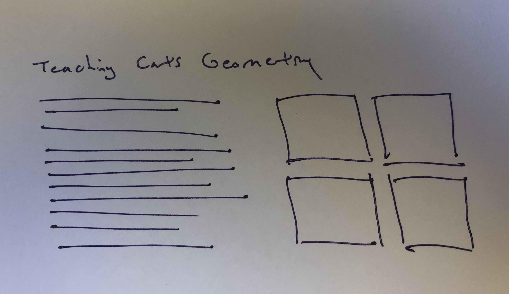
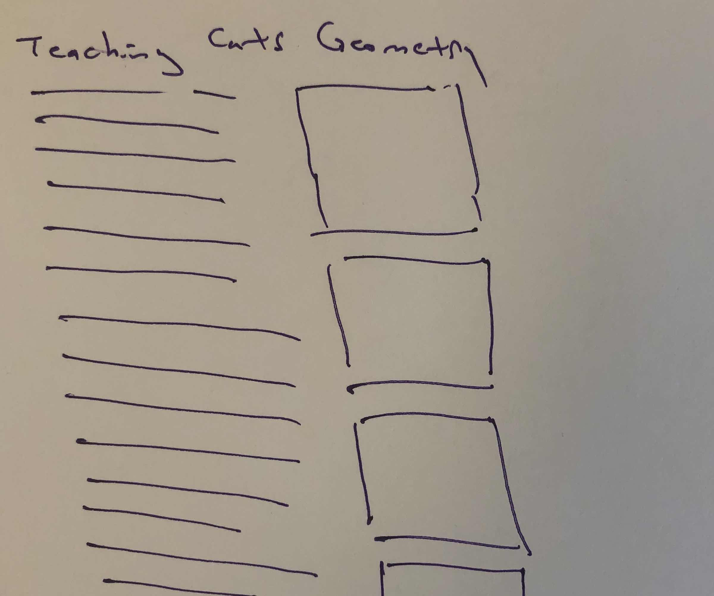
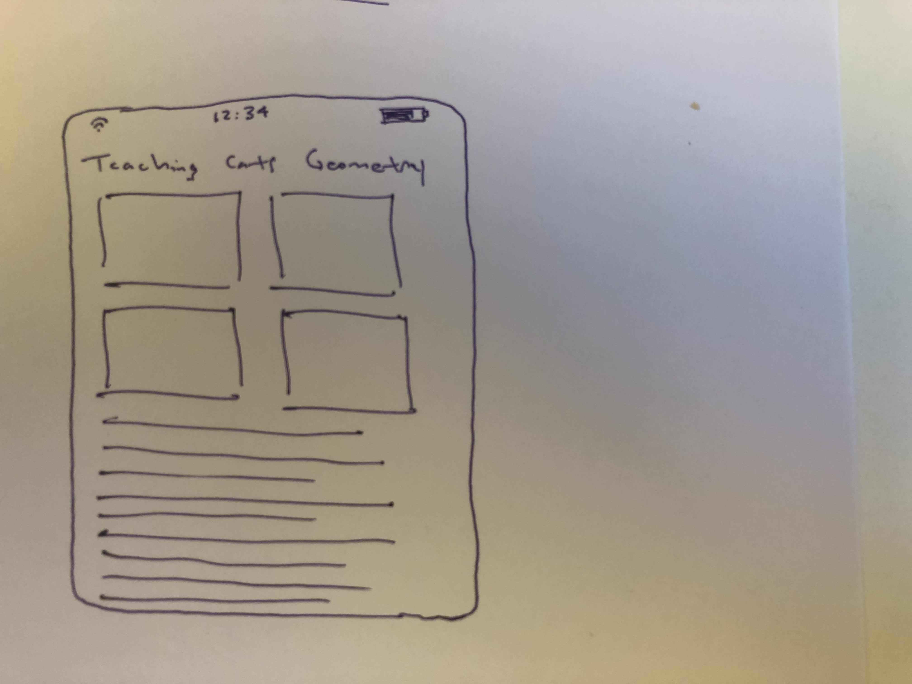

The Information's Front-end Pop Quiz
Hi, we're glad you're interested in joining The Information's engineering team!
This exercise is intended to check your abilities with some front-end coding basics.
There are two tasks, and each has lots of good solutions.
We think these tasks will be fairly quick to complete - if you've spent most of an hour, please
stop working and tell us it's too much. Others will probably agree, and we want to know!
Please don't read the instructions until you're ready to start working,
and please tell us how much time you spent.
Be honest about it, of course - if you tell us you did it in ten minutes, we'll hire you...
and expect you to keep working that fast!
You can do these tasks in either order.
Feel free to check any documentation you like; after all using docs well is part of coding well.
When you're ready to start, note the time, then scroll down to read the tasks! Have fun!
↓
↓
↓
Responsive Layout Task
Take a look at this very basic page:
cats.html
We want it to look nice on small, medium, and large screens.
So please modify cats.html so it's responsive as follows:
-
On a wide screen, the text should be on the left, with the four photos on the right in a 2x2 square:

-
On medium size, the photos should instead be in a vertical strip, so the text next to it is a comfortably readable column:

-
On a phone-sized screen, the photos should form a 2x2 square above the text:

No need to make a separate stylesheet file; you can just define your styles within cats.html (as is already the case for H1).
What do we mean by "wide" vs "medium" etc? It doesn't matter much. You can choose definitions that
make the page look decent at all sizes.
Interactive Behavior Task
Remember, you can do this before the other task if you like.
It's also a change to
cats.html.
-
When the user clicks a photo, call this API endpoint:
https://api.kanye.rest/.
-
You'll receive a JSON object back. Set the page's H1 element to the "quote" element of the response.
No need to make a separate javascript file; you can just put your code in a <SCRIPT> tag
inside cats.html.
You're welcome to use any external tools or libraries that you like. Or dislike.
And when you're done, or tired of this,